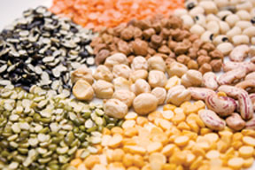
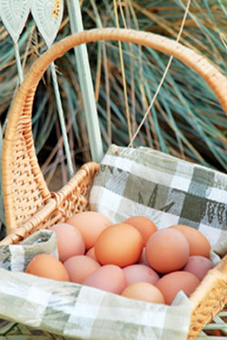
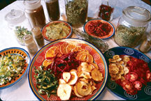
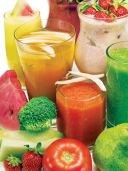
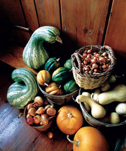
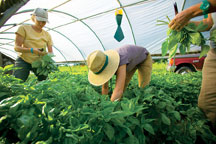
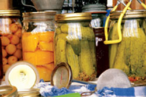
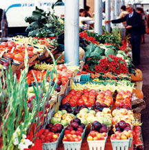

Everybody eats, and what you eat is getting more expensive all the time. By September 2008, food prices had risen 13 percent in just three years - to about $165 a week, or $8,580 a year on average for two-income families that include two to three people. Can you really cut that in half? You bet you can, and in the process you will also improve the overall quality and security of your food supply.
It should come as no surprise that cooking at home is a huge step in the right direction, and it may require less time than you think. Growing some of your own food is a big help, too, whether you are growing a garden or investing some volunteer time with a community garden, school garden or CSA (community-supported agriculture, a system where members receive produce directly from a farm). But first there is another matter to address, which most people find about as pleasurable as stepping on the scale. You must take an honest look at where your food dollars are going now.
If you save your receipts from groceries and eating out for a few weeks, you’ll have all the data you need to start making plans. As you study your bread crumb trail of information, make notes on your buying patterns. These tend to vary wildly from one household to another. When a team of researchers from the University of Utah analyzed the food buying patterns of more than 10,000 Americans, they found that only about 30 percent fell into the desirable “balanced” diet category - people who tended to buy fresh food to cook and eat at home, with occasional meals enjoyed out. Meanwhile many folks were spending nearly half of their food dollars on restaurants and fast food; 7 percent spent more than a third of their food budget on alcohol.
Once you know where you stand, you can start making your food dollars stretch further, which will probably require changes in what and how you eat - and drink. As you consider the strategies below for reducing food costs, remember that you don’t need to do everything at once. There are three paths to follow: develop a food-efficient diet, keep a food-efficient kitchen, and spend your food dollars as wisely as you can. And even better, you may find that you truly enjoy some of these strategies, which are not only good for your wallet, but also maximize flavor and nutrition.
Eat mostly plants. A diet rich in vegetables, fruits and grains typically costs 20 percent less than a diet that revolves around meat. From a practical point of view, a thrifty veg-first strategy will take you into a wonderland of inexpensive, protein-rich, and easy-to-store dry beans and peas. If you cook a batch of beans a week, you’ll have the makings for burritos, veggie burgers, salads and soups, all for pennies a serving. Try different kinds: Beans and peas come in a huge range of shapes, colors, sizes and textures. When you find one you love, set some aside to grow in your garden.
Before you cook them, soak beans in water for eight to 24 hours (larger beans can soak longer). As they plump, the beans will release the gases that cause flatulence. Soaked beans can be simmered on the stove or in a crock pot, or you can cook them (very efficiently!) in a pressure cooker in less than 15 minutes. (And you don’t even have to soak the beans. If you start with dry beans, a pressure cooker can have them ready to eat in about half an hour.)
Choose pastured meat, dairy and eggs. Pastured products are not only more nutritious than industrial meat, but also more eco-friendly. (Visit the Safe Meat Landing Page for several articles about this, and watch for a groundbreaking article about grass farming in our next issue.)
At stores or direct from farmers, organic and free-range eggs, dairy products and meat do cost more than their conventional counterparts, but keep an eye on those prices - the gap is closing significantly as mainstream food costs surge upward.
Foods derived from healthy, humanely raised animals that enjoy sunshine and exercise are worth the extra cost as they provide added benefits when it comes to nutrition, food safety and basic morality. And if you buy locally, you can add the environment and your local economy to the list of beneficiaries.
For all these reasons, I gladly paid $2.55 a pound for the turkeys that a local organic farmer raised for me last year. The freshly harvested birds came with a hidden bonus: Simply having this caliber of meat in the house made it hard to make a case for a budget-busting lunch or dinner elsewhere.
Also consider that many homesteads can easily support a few dairy or meat animals, making laying hens, poultry, dairy goats or a family milk cow well worth their upkeep. The trick to producing your own eggs, dairy or meat economically is simple - stick with animals that earn a food profit vs. adopting too many as pets.
Improve your snacking smarts. In defense of snacking, it is possible that grazing one’s way through the day is more natural, biologically speaking, than sitting down to ceremonial meals three times a day. We were hunter-gatherers not so long ago, which is fine when you’re picking blueberries or eating fresh snap peas off the vine. But when the hunter compulsion has you tiptoeing through a dark kitchen to harvest a bag of chips, you may have a costly problem, in terms of both calories and cash.
I am quite familiar with this syndrome, which is why I have learned to turn the most affordable and humble of ingredients - flour, water and salt - into otherwise pricey snack foods such as pita chips, pretzels or toasted bagel slices. I dry lots of seasonal fruits, too; so even after adding purchased nuts, my ever-changing snack mixes cost 70 percent less than the store-bought versions. And then there is popcorn, and parching corn, and several millets and amaranths known for their roasting qualities - any of which may be a perfect fit to your garden and your favorite TV chair. You really can do better than chips made hundreds or thousands of miles away that cost $3 to $5 a bag.
Learn to use locally abundant foods, including wild-gathered foods such as mushrooms, nuts and berries. Frequently these can be had for the harvesting (check to see if you need a permit to gather on public land), or you might find them as great seasonal deals at farmers markets. The price usually drops when the crop comes in, so buy when the supply is at its peak to get excellent quality at a good price. From pecans in the Southeast to wild Maine blueberries to the Pacific Northwest’s bounty of mushrooms, every area has its riches and often you can harvest them yourself for free.
Eat whole, eat plain. Whole grains are supernutritious, tasty and cheap. Whole oat grains, called groats, cook into a truly satisfying breakfast for about 25 cents per serving, and a $2 bag of gourmet brown rice can anchor many meals for the whole family. Once cooked, whole grains can go into spicy stir-fries, be paired with roasted meats, or taken in a sweeter direction with diced apples, cinnamon and brown sugar. The important thing is to have them around, ready to eat. Whole grains such as wheat berries, groats, hulled barley or brown rice take about an hour to cook on the stove, or 15 to 20 minutes in a pressure cooker. (Some grains, such as quinoa and millet, cook up even faster.) By cooking two batches per week, you will have inexpensive, ready-to-eat whole grains available at all times.
Cook and eat at home. Numbers from the U.S. Department of Labor’s 2005 Consumer Expenditure Survey show that Americans spend about half of their food dollars away from home - a figure that began to decline last year as food prices went up. Still, it’s a no-brainer that home food is cheaper than eating out, even if you must buy all of the ingredients, or you are just learning to cook. You will not be alone. Restaurant revenues are down, but sales of cookware and cookbooks are on the rise. And few things are as enjoyable as savoring fresh and fragrant dishes that come from your own kitchen.
Make big batches. Consider a pot of split pea soup, easily made by soaking a pound of dry peas in water for a few hours, and then simmering them with onions, celery and carrots (and some would insist, good bacon or ham). You now have enough soup for two, three or even four meals, depending on the size of your household. As soon as the mother batch cools, pack up single servings in freezer containers; they will keep frozen for six months. Do not underestimate the overall value (in cost and time savings) of such efforts. Reheated in the middle of winter, a bowl of frozen chili made with the last peppers and tomatoes from your garden will taste like heaven.
Shop at home first. If you grow any food, or stock up through farmers markets at peak season (which is when you can get the best deals on any kind of produce), always shop your freezer and pantry first. Even garlic and winter squash won’t keep forever, and the garden treasures in your freezer are best used within a few months. Plus, you’re less likely to buy things you don’t really need if you shop in your own “store” before heading to the market.
Take your lunch. When you pack up some pasta salad made the day before and take it to work, it’s almost like having a free lunch. Even a cheap fast food lunch can cost $5, as will a Styrofoam box of salad bar selections from the supermarket. Compare and contrast: a homemade salad wrap with garden-grown spinach or arugula, or a $6 sandwich that came to you through the labyrinth of our institutional food supply? We should address packaging here, too, because the amount of paper, cardboard and plastic waste involved in a fast-food lunch should make us all queasy. Be sure to bring your own snacks to work, too, which will make it easier to avoid break room donuts and vending machine junk.
Make your own wine and beer. Let’s say you and your partner like to sip a glass of wine at the end of the day, or maybe you prefer a good beer. Buying two inexpensively priced $8 bottles of wine a week will cost you more than $800 dollars a year; two $6 six-packs of beer a week comes to $624. And what about those extra bottles purchased for holidays, gifts or parties? It can add up fast, plus there are all those bottles. Even when recycled, glass bottles are major energy hogs.
If you make your own wine or beer, there will be an upfront investment of about $70 for equipment, which will quickly pay for itself. (See recent articles on making wine, beer and hard cider.) At my house, we make lovely “country” wines from our apples, plums and other fruits, but if you have no fruit you can make wine using packaged juices. Stores that sell winemaking supplies usually stock packaged “varietal” juices such as chardonnay, cabernet sauvignon, etc., which can be fermented into wine at a cost of about $2 per bottle.
Homebrewing is as fun and easy as home winemaking, and the payoff in both cases rises with your level of skill. If you avoid the temptation to invest in equipment you really don’t need, and tweak your recipes and procedures to achieve superior results, you will also save a bundle in the long run.
Work with a CSA. When various studies have compared the value of food delivered in weekly boxes by member-supported CSAs to their retail counterparts, costs come out about even. (Search our website to learn more about CSAs.) This is as it should be; there is fundamental absurdity in the notion that organic produce should be cheap just because it is farmer-direct. Yet there are two easy ways to reduce your CSA bill. First, if your CSA offers them, sign up for extra volunteer hours, which will earn you a significant discount on your membership fee. If you are seriously short of funds, apply for a discounted membership. Loyal patrons of established CSA farms often donate enough money to cover sponsored memberships for others, and some CSAs accept food stamps and have grant money to cover costs for low-income members. (Learn more at the United States Department of Agriculture.)
Use coupons for brands you like. It is definitely worthwhile to keep track of coupons for products you buy repeatedly, and to seek out coupons for expensive items such as olive oil or dairy products. The easiest way is to use the Internet, because printable coupons are offered on Web sites for manufacturers and specific stores. Organic Valley and Stonyfield, for example, offer a nice selection of $1 coupons on their sites, or you can shop for local specials via Web sites hosted by big supermarket chains such as Safeway, Kroger or Food Lion. Coupons not found using either of these methods are also not likely to turn up using various coupon-finding sites, many of which require a cumbersome registration anyway.
Buy cooperatively in bulk. If you feel alone in your quest for the most basic organic foods at a fair price - such as whole grains, flours and peanut butter - you can check with a local food co-op, which may be able to get you a better price than is offered in the store’s bulk bins (home of great buys on whole grains, dry legumes, and herbs and spices). They also can often order hard-to-find items at your request. Another option is to participate in - or even organize - a buying club, which is a group of about seven or more households that combine their orders to get wholesale pricing on just about anything you might buy at a health food store. In addition to saving you money on staples such as flour and rice, a buying club connects you with fellow members on distribution day, when everyone gets together to divvy things up. The biggest national distributor, United Buying Clubs, can help you connect with your closest club.
Glean in season. Historically, when farmers finished harvesting all they wanted of their crops, they invited the local peasants to come and get what was left behind. These days, gleaning is being redefined as “food recovery,” which might involve rescuing overripe fruits from a produce manager’s discard bin, or channeling a caterer’s leftovers to a homeless shelter.
But on a more everyday level, large gardens and small farms always produce more vegetables and fruits than can be picked or considered marketable. By talking with vendors at your local farmers market or networking through Freecycle, Craigslist or other free databases, you may be surprised at what you can get as long as your requests are keyed to the seasons. In early summer, offer to glean strawberries. In the fall, put out a request for bruised apples and pears, which are great for canning. And, when you hear that the first freeze is coming in a few days, call up gardeners or organic growers you know and ask if there is anything you can come and help pick. Be forewarned: Gardeners are incredibly generous people. Bring along lots of boxes and bags for greens, herbs and other end-of-season treasures.
A recent study from the University of Arizona shows that most people underestimate how much food they waste. For example, you might think you are tossing only about 1 percent of the food that goes through your kitchen, but the real number is probably closer to 15 percent! Some things will get lost in the refrigerator no matter what you do, but you can save money day after day by minimizing waste.
|
 VIKRAM RAGHUVANSHI/ISTOCKPHOTO Beans are inexpensive and easy to store. They come in a huge range of shapes, colors, sizes and textures, so you're sure to find a variety you love. |
 RICK WETHERBEE If you purchase eggs and other animal products, opt for those that come from humanely raised, pastured animals. |
 DAVID CAVAGNARO Freeze or dry your own foods for healthy and inexpensive snacks. |
|
ISTOCKPHOTO Cooking at home, with simple whole foods, is one of the fastest ways to reduce your food budget. |
 IVAN MATEEV/ISTOCKPHOTO Smoothies are a yummy and easy way to use excess produce. |
 WALTER CHANDOHA Save money on food by buying foods in season to store through the cold months. |
|
 JASON HOUSTON You can save money on grocery bills by volunteering with a local community-supported agriculture group (CSA). |
 RICK WETHERBEE Preserving some food at home during a food’s peak season is a big big money-saver. |
 LIQUID LIBRARY Shop for seasonally abundant items at local farmers markets to save money on groceries. |